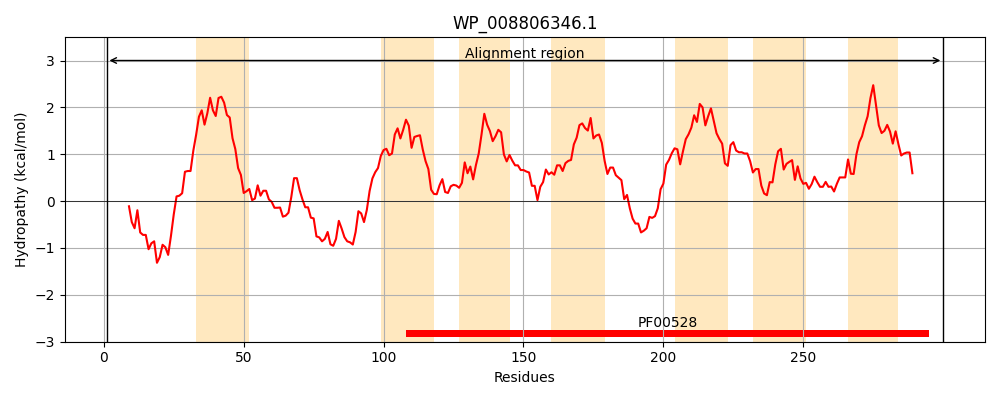
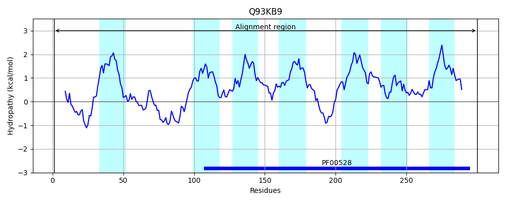
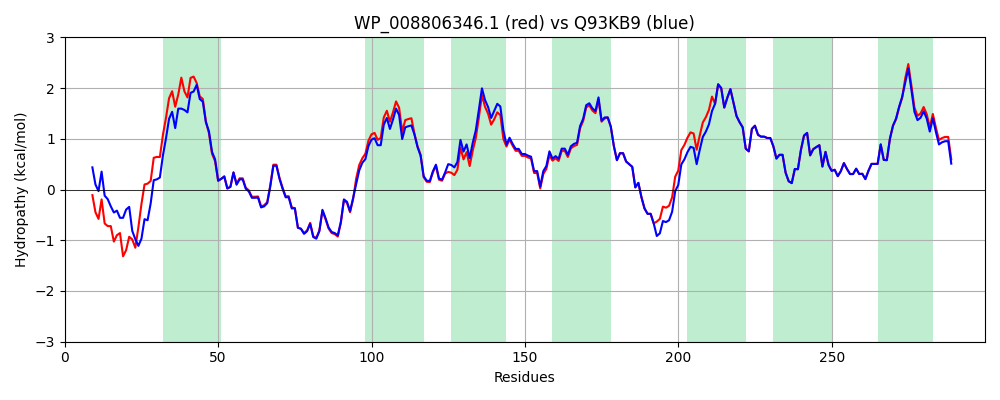

Hit Accession: Q93KB9
Hit TCID: 3.A.1.1.11
Hit Description: gnl|BL_ORD_ID|17304 gnl|TC-DB|Q93KB9|3.A.1.1.11 Inner membrane protein - Erwinia chrysanthemi.
Mach Len: 300
e:0.000000
Query TMS Count : 7
Hit TMS Count: 7
TMS-Overlap Score: 6.900000
Predicted Substrates:CHEBI:62533;oligogalacturonide
BLAST Alignment:
Score: 1404 , Bit scores: 545 bits, E-value: 0.0e+00, Alignment length: 300, Percentage identity: 88
Query: 1 MADIQQMAPVMSNADREVARTLRREKVSRVVRYVVLIFVGLLMLYPLAWMFSASFKPNHEIFTTLGLWPAHATWDGFINGWKTGTEYHFGHYMLNTFKYVIPKVVLTIISSTIVAYGFARFEIPWKKFWFATLITTMLLPSTVLLIPQYLMFREMGMLNSYLPLYLPLAFATQGFFVFMLIQFLRGVPRDMEEAAQIDGCNSIQVLWYVVVPILKPAIISVALFQFMWSMNDFIGPLIYVYSVDKYPIALALKMSIDVTEGAPWNEILAMASISILPSIIVFFLAQRYFVQGVTSSGIKG 300
MADI + A EV RTLRREK++ RY +L+ VG+LMLYPLAWMFSASFKPNHEIFTTL LWPAHATWDGFINGWKTGTEY+FGHYM+NTFKYVIPKV LT+ISSTIVAYGFARFEIPWK FWFATLI TMLLPSTVLLIPQY+MFREMGMLNSYLPLY+P+AFATQGFFVFMLIQFLRGVPRDMEEAAQIDGCNS QVLWYVVVPILKPAIISVALFQFMWSMNDFIGPLIYVYSVDKYPIALALKMSIDVTEGAPWNEILAMASISILPSII+FF+AQRYFVQGVTSSGIKG
Sbjct: 1 MADIHSPLSAQAIAAAEVRRTLRREKINAGFRYTILLAVGILMLYPLAWMFSASFKPNHEIFTTLSLWPAHATWDGFINGWKTGTEYNFGHYMINTFKYVIPKVALTVISSTIVAYGFARFEIPWKNFWFATLIATMLLPSTVLLIPQYIMFREMGMLNSYLPLYVPVAFATQGFFVFMLIQFLRGVPRDMEEAAQIDGCNSWQVLWYVVVPILKPAIISVALFQFMWSMNDFIGPLIYVYSVDKYPIALALKMSIDVTEGAPWNEILAMASISILPSIIIFFMAQRYFVQGVTSSGIKG 300 | Protein Hydropathy Plots: |
|---|
|  |  |
Pairwise Alignment-Hydropathy Plot:
|
|---|
|  |